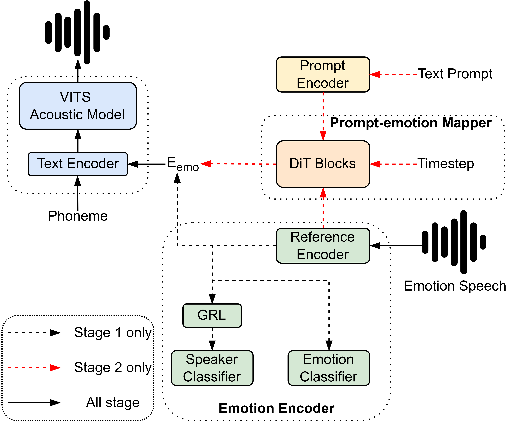

Emotional transfer text-to-speech (TTS) has made significant progress in recent years.
However, most existing systems still rely on expressive reference speech or predefined emotion categories to control the emotional tone of the output.
In practical scenarios, users may prefer to convey emotions using natural language prompts, without needing reference speech that matches the target emotion.
Recently, text-driven TTS has gained increasing attention as a promising solution to this challenge. In this paper, we propose PromptEmo,
a controllable emotional TTS framework that generates expressive speech based on natural language prompts. It employs a flow matching-based technique to learn
a mapping between text prompts and emotion embeddings. This model is trained in a two-stage process to build a multimodal emotional speech synthesis system.
Experimental results show that PromptEmo achieves fine-grained emotional control, high audio quality in the synthesized speech.

The two-stage training process of PromptEmo. In the first stage, the model is trained on highly expressive emotional speech. In the second stage,
we fine-tune the entire model using expressive emotional speech paired with natural language prompts to train the prompt-emotion mapper.
This process enabling fine-grained and controllable emotion transfer in speech synthesis driven by text prompts.
Audio Samples
Using Speech Reference
Target Speaker
Emotion
Reference Speech
PromptStyle
eVITS
PromptEmo
Angry
Happy
Sad
Surprise
Using Text Prompt
The speaker speaks with normal pitch and normal energy and emotion is angry/happy/sad/surprise.
Target Speaker
Emotion
PromptStyle
ParaVITS
PromptEmo
Angry
Happy
Sad
Surprise
Pitch Control
The speaker speaks with low/normal/high pitch and normal energy.
The speaker speaks with low/normal/high pitch and normal energy and emtion is angry.
Energy Control
The speaker speaks with normal pitch and low/normal/high energy.
The speaker speaks with normal pitch and low/normal/high energy and emotion is angry.
Speed Control
The speaker speaks quickly/slowly with normal pitch and normal energy and emotion is angry.
The speaker speaks quickly/slowly with normal pitch and normal energy and emotion is sad.
Ablation Study
The speaker speaks with normal pitch and normal energy and emotion is angry/happy/sad/surprise.